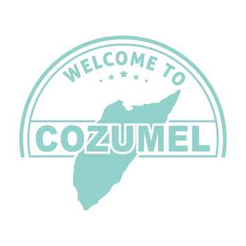
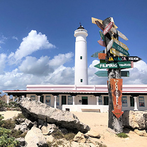
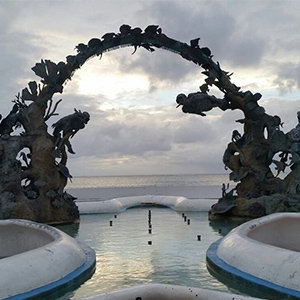

This is Cozumel!

A little history
The growth and decline of the Mayan civilization is an unforgettable part of the prehispanic history of
Cozumel.
Originally, the Mayans were established in Guatemala, fifteen centuries before Christ. Their culture and
influence
then extended to the entire south: Mexico, Belize, Honduras, and El Salvador. In 200 ac, they began to build
cities in the Yucatan Peninsula.
The advanced Mayan culture hit its peak from the VII century until the IX century. They considered Cozumel to
be
a
sacred sanctuary and called it “Cuzaam Luumi” which means land or place of the swallows. They later shortened
these two words to “Cuzamil”. When the Spanish arrived, the name adapted phonetically from “Cuzamil” to
“Cozumel”.
Text credit: thecozumelsun.com. For more information visit their article about Cozumel's History
Featured destinations
Each week we recommend some of the best destinations for your adventures in Cozuml, sponsored by our friends at TripAdvisor. This week's recommendations are:
Punta del Sur

The Punta del Sur is an Eco Beach Park is a beach side area protected by government regulation. Here, you can do horseback riding through the coastline, climb the local lighthouse, take a boat tour to see crocodiles, or just relax at your leisure anywhere in the tens of kilometers the white sand beach.
Coral Reefs Monument

This beach-side monument is located in San Miguel. This beach boasts pristine waters and an amazing ecosystem of marine life. Go to the monument to enjoy jungle and snorkeling tours, and visit the ancient sites to immerse yourself in the Caribean archeological experience. Enjoy the natural beauty!
Dolphin Discovery

This natural sanctuary of marine life holds a unique opportunity for to take a safe swim in the ocean while interacting with Dolphins in a safe and controlled environment, lead by marine life specialists. Come and meet your new dolphin best friends, and pose for a photo to take home as a life-long memento!